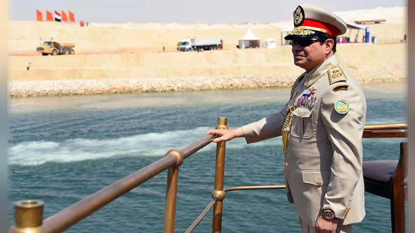
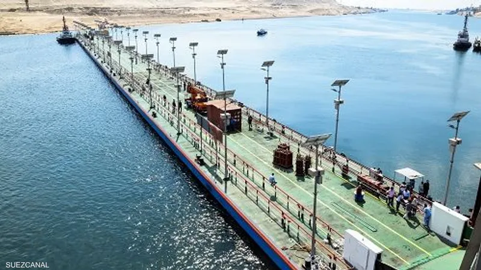
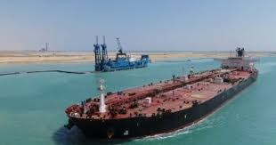
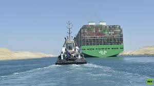
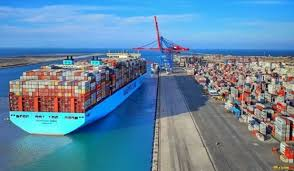

إنجازات الرئيس السيسي في تنفيذ المشروع
تنفيذ المشروع في زمن قياسي
تم إنجاز مشروع قناة السويس الجديدة في عام واحد فقط، رغم التقديرات الأولية التي كانت تشير إلى 3 سنوات على الأقل، مما يعكس قدرة مصر على إنجاز المشروعات القومية الكبرى بكفاءة عالية.
ازدواج القناة وتحسين حركة الملاحة
شمل المشروع إنشاء ممر ملاحي جديد بطول 35 كم، بالإضافة إلى توسيع وتعميق 37 كم من القناة الأصلية، ليصل إجمالي طول المشروع إلى 72 كم، مما أدى إلى تقليل زمن انتظار السفن من 18 ساعة إلى 11 ساعة فقط، وزيادة القدرة الاستيعابية لحركة الملاحة.
تعزيز مكانة قناة السويس كممر ملاحي عالمي
ساهم المشروع في زيادة عدد السفن العابرة يوميًا، حيث ارتفع العدد من 49 سفينة إلى أكثر من 97 سفينة مستقبليًا، مما عزز من قدرة القناة التنافسية أمام الممرات البديلة، مثل الطريق البحري عبر القطب الشمالي.
زيادة العائدات الاقتصادية
منذ افتتاح القناة الجديدة في 6 أغسطس 2015، ارتفعت إيرادات القناة بشكل ملحوظ، حيث سجلت 9.4 مليار دولار عام 2023 مقارنة بـ 5.3 مليار دولار عام 2014، مما أدى إلى تحسين ميزان المدفوعات المصري وزيادة التدفقات النقدية الأجنبية.
خلق فرص عمل وتحفيز الاقتصاد المحلي
ساهم المشروع في توفير أكثر من مليون فرصة عمل مباشرة وغير مباشرة، من خلال أعمال الحفر والبنية التحتية، كما عزز من نمو القطاعات المرتبطة بالنقل واللوجستيات والتجارة.
إنشاء منطقة اقتصادية متكاملة حول القناة
لم يقتصر المشروع على تحسين حركة الملاحة فقط، بل تضمن أيضًا تطوير المنطقة الاقتصادية لقناة السويس، والتي تشمل موانئ حديثة، ومناطق صناعية، ومراكز لوجستية عالمية، مما جعل مصر وجهة استثمارية متميزة للشركات العالمية.




